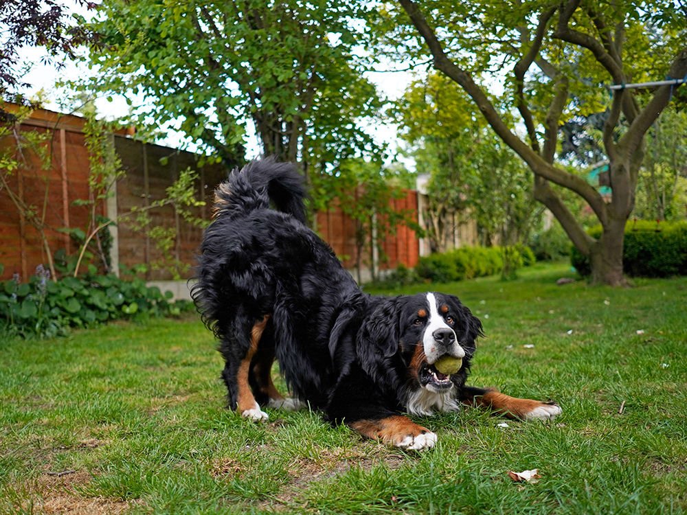

Lenguaje corporal canino:
El lenguaje corporal canino es una forma crucial para entender las emociones y necesidades de los perros. Al observarlo puedes interpretar sus sentimientos, intenciones y estado de ánimo.
A continuación, te mostramos las señales más comunes y lo que significan:
- Relajado: El perro está acostado de lado, con la cola relajada y las orejas en su posición natural. Su postura es completamente tranquila, sin tensión, indicando que se siente seguro y cómodo.
- Tranquilo y neutro: El perro está de pie con una postura erguida y relajada. La cola está en una posición natural, moviéndose suavemente o en reposo. Las orejas están erguidas pero relajadas, y su mirada es tranquila.
- Ansioso y nervioso: El perro tiene una postura encorvada, con el cuerpo bajo y la cola entre las patas. Sus orejas están hacia atrás, y los ojos están muy abiertos, mostrando una expresión de preocupación o miedo.
- Juguetón: El perro está en una postura de invitación al juego, con las patas delanteras bajas y el trasero levantado. La cola está en alto, moviéndose rápidamente de un lado a otro.
- Alerta: El perro tiene una postura erguida, con la cabeza levantada y la cola elevada. Las orejas están completamente erguidas, atentas a algún sonido o movimiento.
- Asustado: El perro está encogido, con el cuerpo bajo y la cola escondida entre las patas. Sus orejas están completamente hacia atrás, y los ojos muy abiertos, mostrando la zona blanca.
- Emocionado: El perro está de pie con la cola alta y moviéndose rápidamente. Las orejas están erguidas y orientadas hacia adelante, mostrando interés y emoción.
- Dominante: El perro está de pie con una postura firme y la cola alta. Su cuerpo está tenso, y las orejas están erguidas, indicando confianza y control.
- Sumiso: El perro está acostado de espaldas, mostrando su vientre en una postura de sumisión total. La cola está completamente relajada, y las orejas están hacia atrás.
- Agresivo: El perro está de pie con una postura rígida, mostrando una actitud de desafío. La cola está levantada o estirada hacia atrás, completamente tensa.
¿Los perros están jugando o peleando?
- Postura de invitación al juego ("playbow"): El perro se inclina hacia adelante con el pecho y las patas delanteras en el suelo, mientras las patas traseras permanecen elevadas. 
- Comportamiento durante el juego: Los perros se acercan de forma lateral y con cuerpos relajados. La cola estará levantada y en movimiento activo durante el juego.
- Interacciones físicas: Mordiscos suaves y fugaces, junto con gruñidos y ladridos agudos, son señales de juego. En contraste, mordiscos bruscos y persistentes indican agresión.
- Persecuciones y roles: En un juego, los perros pueden alterarse durante la persecución, y su forma de pedir un descanso suele ser tumbandose boca arriba, mostrando la barriga.
- Choques y caídas: En el juego, los perros caen suavemente y rápidamente se levantan para seguir jugando.
- Mandíbulas y boca: Durante el juego, las mandíbulas están relajadas, con la lengua fuera y los dientes apenas visibles.